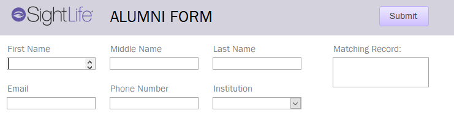

Key Features
Microsoft Access Database
Our data management system was built using Microsoft Access. The relational database organizes and stores the Clinical Team's data in a controlled and centralized location. Data types and general formatting is enforced in order to maintain good data integrity. Most of all, in building a normalized database, we allow SightLife to easily query their data in meaningful and impactful ways. Our database saves SightLife time building and keeping track of Excel sheets, as well as time analyzing and manually asking questions of their data. Having everything stored in one place, where queries can be easily built and run, allows SightLife the time and focus needed to sooner eliminate corneal blindness worldwide. Our team developed numerous queries in Access which can be easily imported into Power BI for creating dashboards and visualizations to answer pertinent questions.
Microsoft Access Forms
Our Forms, also built in Microsoft Access directly solve the issues SightLife faced surrounding data insertion and integrity. The forms are used for data-entry into the database. A person can now input information through user-friendly interfaces instead of directly interacting with the tables. These forms are dynamic, in which the various dropdowns and lists change depending on previous inputs. They also improve control and can check for errors or restricted data to ensure users are inputting accurate data into all of the required fields. Overall, this improves the quality of SightLife’s data and makes their data handling processes more efficient, simple, and standardized.
Power BI Visualizations
Our visualizations use queries built in the Access database to provide valuable answers for questions SightLife had about their data. Previously, answering these questions would have taken much manual and complex analysis, which was not feasible for SightLife's Clinical Team to perform. Our systems allow SightLife to seamlessly and recurrently ask questions of their data and get accurate responses fast. The most important areas where SightLife wanted further insights into were year over year growth, NPS (Net Promotors Scores) for their training courses, and information surrounding surgeons trained. Other valuable pieces of information SightLife wanted to explore were classes with the highest and lowest year over year growth for alumni, percent breakdown of participants by institution type, which surgeons were doing more surgeries post course than pre course, as well as comparisons surrounding scores/surgeries, counts, minimum/maximum scores, etc. Through the use of Microsoft’s Power BI Visualization software, we were able to build multiple dashboards that gave SightLife the answers to these questions, as well as the ability to explore and analyze their data in ways that were never imagined before.
Product Screenshots
Access database
The Entity Relationship Diagram of our Access Database, showing how the data is organized in tables, with attributes.
Access Forms
Our user-friendly forms make inserting data into our database accurate and easy.


Power BI Visualizations
Examples of our Power BI visualizations. These dashboards answer questions about class counts, year over year change in surgical volumes, score comparisons, year over year growth for alumni, minimum scored steps, and more.